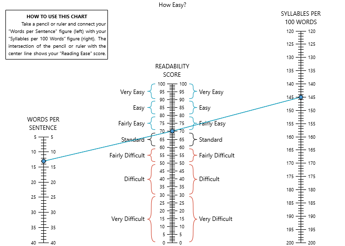
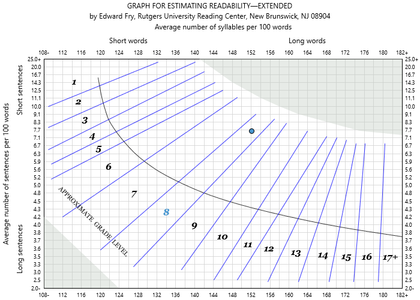
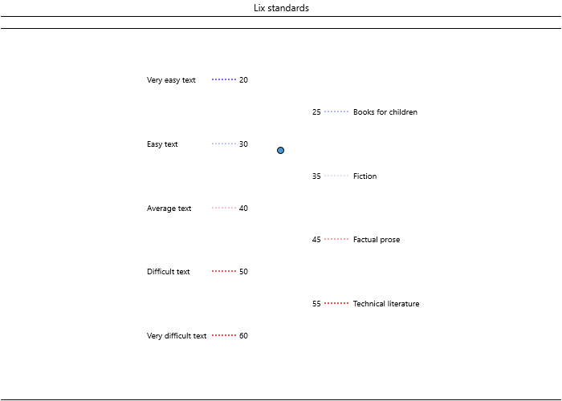
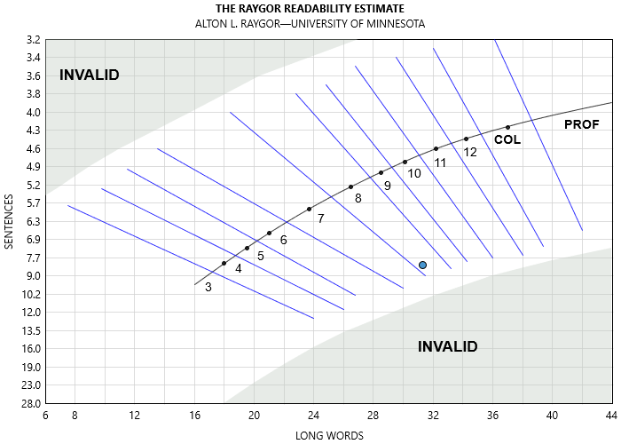

| G | Grade level |
| W | Number of words |
| RP | Number of strokesa |
| S | Number of sentences |
| a Strokes are characters and punctuation (except for sentence terminating punctuation) |
11 English Readability Tests
11.1 Automated Readability Index
The Automated Readability Index–also called “ARI” or “auto”–(Smith and Senter) was originally created for U.S. Air Force materials. As such, it was designed for technical reports and manuals. This test calculates the grade level of a document based on sentence length and character count.
Kincaid et al. (3, 6–15) also used this test for evaluating peer-prepared reading materials for three studies involving:
- 33 remedial high school students
- 22 graduate students from Southern Georgia College
- 14 trainees participating in a Public Service Careers project at Southern Georgia College
They noted that for the high school study, the materials with lower ARI scores yielded better comprehension rates “as reflected in cloze scores” (3). The graduate students and trainees from the other studies stated that the materials may not be appropriate for remedial high school readers (13, 15), but did agree that the stories were “authentic” and “interesting.”
Where:
11.2 Bormuth Cloze Mean
The Bormuth Cloze Mean (Machine Computation for Passage Readability) Formula (“Readability” 79–132) calculates a predicted cloze score for a document.
This test is influenced by three variables (word length, sentence length, and word familiarity). Because it uses both word familiarity and syntactic complexity for its analysis, it is often recommended for student documents.
For this formula, a study involving 2,600 students ranging from 4th-12th grade (Development of Readability Analyses 97) was conducted. The students completed 330 110-word cloze passages, and their scores were correlated against numerous linguistic factors from the passages. After a series of factor analyses and multiple regressions, a series of formulas were created to predict cloze and grade-level scores for a passage. These formulas were then cross-validated against 20 250–300 word passages (Development of Readability Analyses 105). These formulas correlated with between r^2 = 0.81 to 0.83 with the original test data and between r^2 = 0.92 to 0.93 with the cross validation data.
Of these formulas, the predicted cloze formula is as follows:
Where:
| C | Estimated cloze score | |
| R | Number of characters | |
| W | Number of words | |
| D | Number of familiar Dale-Chall words | |
| S | Number of sentences |
Cloze scores returned by this test should be in percentage format (e.g., 75) rather than fractional format (e.g., .75) to be consistent with other tests.
11.3 Bormuth Grade Placement (GP35)
The Bormuth Grade Placement (Machine Computation for Passage Readability) Formula (“Readability” 79–132) calculates a grade level for a document.
This test is influenced by three variables (word length, sentence length, and word familiarity). Because it uses both word familiarity and syntactic complexity for its analysis, it is often recommended for student documents.
For this formula, a study involving 2,600 students ranging from 4th-12th grade (Development of Readability Analyses 97) was conducted. The students completed 330 110-word cloze passages, and their scores were correlated against numerous linguistic factors from the passages. After a series of factor analyses and multiple regressions, a series of formulas were created to predict cloze and grade-level scores for a passage. These formulas were then cross-validated against 20 250–300 word passages (Development of Readability Analyses 105). These formulas correlated with between r^2 = 0.81 to 0.83 with the original test data and between r^2 = 0.92 to 0.93 with the cross validation data.
Of these formulas, the grade-placement formula is as follows:
Where:
| G | Grade level | |
| R | Number of characters | |
| W | Number of words | |
| D | Number of familiar Dale-Chall words | |
| S | Number of sentences |
Note that this particular grade-placement test uses the regression equation that best fit the passages with cloze scores averaging ~35%. There are also 45% and 55% cloze-score fitting Bormuth equations, but as Bormuth noted “35 per cent on a cloze readability test tentatively seemed to represent a criterion for deciding whether or not students are able to exhibit a maximum of information gain as a consequence of reading the passage” (Development of Readability Analyses 102).
11.4 Coleman-Liau
The Coleman-Liau formula calculates the grade level and estimated cloze score of a document based on sentence length and character count.
Coleman and Liau noted the difficulties of using computers to count syllables (283) for readability formulas. As a solution, they presented a new formula that used character counts as an alternative to syllable counting. This formula was derived from a regression equation trained on the 36 150-word passages from the Miller and Coleman cloze study (851). During validation, the factors of sentences and characters per 100 words yielded a strong correlation of r^2 = .92 against Miller and Coleman’s cloze scores.
Coleman-Liau calculates the predicted cloze percentage with the following formula:
Then convert the cloze percentage into a grade level with the following formula:
Where:
| E | Estimated cloze % |
| G | Grade level |
| R | Number of characters (per 100 words) |
| S | Number of sentences (per 100 words) |
Though not explicitly mentioned in their article (Coleman and Liau 284), the estimated cloze % from the first equation must be converted to a fraction (i.e., divided by 100) to produce the expected results. For this reason, “(E/100)” is shown in the second equation, rather than just “estimated cloze %” as it appears in the source article. As an example, an estimated cloze % of 51.3 should yield a grade level of 9:
9 = (-27.4004*(51.3/100)) + 23.06395
11.5 Danielson-Bryan 1
Danielson-Bryan 1 (206) is meant for student materials and calculates the grade level of a document based on sentence length and character count.
DB1 was designed to be a faster method (compared to Farr-Jenkins-Paterson) of calculating readability scores on UNIVAC 1105 computers. Rather than counting syllables, DB1 counts characters and punctuation, which was simpler to analyze on computers of that era. This performance benefit is more of a historical reference now; modern computers can calculate syllable counts optimally.
This test was trained against 383 selections from the 1950 edition of McCall-Crabbs Standard Test Lessons in Reading. For validation, the derived formula had an r^2 = 0.575, similar to Farr-Jenkins-Paterson’s r^2 = 0.553. This regression equation is as follows:
Where:
| G | Grade level |
| W | Number of words (see below) |
| RP | Number of charactersa |
| S | Number of sentences |
| a In this context, characters are letters, numbers, and punctuation (except for sentence-ending punctuation) |
In the original article, the statistic of “number of spaces between words” is suggested, rather than explicitly saying “number of words.” Logically, this should be the number of words minus 1. However, in the article’s example, number of spaces between words is the same as number of words (even when there are dashes connecting words). It is therefore assumed that the authors’ intention was to count the number of words using the following logic:
- Count the number of spaces.
- Treat dashes connecting words as spaces.
- Add 1, considering how there would be one less space than words.
For this reason, the number of words statistic is a more accurate description of what the authors intended.
11.6 Danielson-Bryan 2
Danielson-Bryan 2 (206) calculates an index score of a document based on sentence length and character/punctuation count. It is a variant of Flesch Reading Ease, with the difference being that it uses character and punctuation counts instead of syllable counts. Being a variant of Flesch, its scores range from 0–100 (the higher the score, the easier to read), with average documents being within 60–70.
DB2 was designed to be a faster method (compared to Farr-Jenkins-Paterson) of calculating readability scores on UNIVAC 1105 computers. Rather than counting syllables, DB2 counts characters and punctuation, which was simpler to analyze on computers of that era. This performance benefit is more of a historical reference now; modern computers can calculate syllable counts optimally.
This test was trained against 376 passages from McCall-Crabbs Standard Test Lessons in Reading (1926 ed.). For validation, the derived formula had an r^2 = 0.575, similar to Farr-Jenkins-Paterson’s r^2 = 0.553. This regression equation is as follows:
Where:
| I | Flesch index score |
| W | Number of wordsa |
| RP | Number of charactersb |
| S | Number of sentences |
| a Refer to Danielson-Bryan 1 for an explanation of why number of words is used, instead of number of spaces between words. | |
| b In this context, characters are letters, numbers, and punctuation (except for sentence-ending punctuation) |
| Flesch Score | Description |
|---|---|
| 90–100 | Very easy, third-grade level |
| 80–89 | Easy, fourth-grade level |
| 70–79 | Fairly easy, fifth-grade level |
| 60–69 | Standard, sixth-grade level |
| 50–59 | Fairly difficult, junior high school level |
| 30–49 | Difficult, high school level |
| 0–29 | Very difficult, college level |
11.7 Degrees of Reading Power (GE)
The Degrees of Reading Power (grade equivalent) (Carver 303–16) test calculates the difficulty level of a document by performing the DRP test and then converting its units score into a grade level.
This test was trained on the same 330 110-word passages used to build the Bormuth test, along with an additional 30 samples. These additional samples were 100-word passages tested by students from the graduate library at the University of Maryland (Carver 305–06). Using these samples (and their cloze and Rauding scores), Carver built a table to convert between DRP units and grade levels (see below). Next, he compared the DRP-GE results against DRP units, Rauding scale scores, and cloze scores. The DRP-GE (grade equivalency) results strongly correlated with these other scores:
- DRP: r = 0.98
- Rauding Scale-GE: r = 0.84
- cloze: r = -0.81
To calculate the grade equivalency, first calculate the DRP difficulty of a document. Then, look up the DRP score from the following table to find its respective grade level:
| DRP-Difficulty | DRP-GE | DRP-Difficulty | DRP-GE |
|---|---|---|---|
| 0–39 | 1.5 | 59 | 6.8 |
| 40 | 1.6 | 60 | 7.3 |
| 41 | 1.7 | 61 | 7.8 |
| 42 | 1.7 | 62 | 8.3 |
| 43 | 1.8 | 63 | 8.8 |
| 44 | 2.0 | 64 | 9.4 |
| 45 | 2.1 | 65 | 10.0 |
| 46 | 2.3 | 66 | 10.6 |
| 47 | 2.5 | 67 | 11.2 |
| 48 | 2.8 | 68 | 11.8 |
| 49 | 3.0 | 69 | 12.5 |
| 50 | 3.3 | 70 | 13.1 |
| 51 | 3.6 | 71 | 13.7 |
| 52 | 3.9 | 72 | 14.4 |
| 53 | 4.3 | 73 | 15.0 |
| 54 | 4.7 | 74 | 15.7 |
| 55 | 5.1 | 75 | 16.4 |
| 56 | 5.5 | 76 | 17.1 |
| 57 | 5.9 | 77 | 17.9 |
| 58 | 6.3 | 78–100 | 18.0 |
11.8 Degrees of Reading Power
The Degrees of Reading Power (Kibby 416–27; Carver 303–16) formula calculates the difficulty level of a document in terms of DRP units. (These units range from 0 [easy] to 100 [difficult]).
The DRP difficulty score of a document is used to match it to a student based on their DRP ability score. DRP ability tests are manual tests administered to students to gauge their reading levels.
This test is based on the Bormuth Cloze test and uses the same criteria for its calculation. Basically, this test uses the Bormuth formula to calculate a predicted cloze score, converts it to percentage format, and then inverts it to arrive at the units score.
Where:
| U | Units score | |
| R | Number of characters | |
| W | Number of words | |
| D | Number of familiar Dale-Chall words | |
| S | Number of sentences |
11.9 Easy Listening Formula
The Easy Listening Formula is designed for “listenability” and is meant for radio and television broadcasts. Fang (65) stated that broadcasted news generally has much shorter sentences compared to print media. Therefore, he created the ELF test to focus solely on complex-word density, not using sentence length as a factor. That is, rather than looking at a sentence’s word count, the density of syllables in a sentence is used instead.
This test was trained on 36 television scripts from the following:
- ABC
- CBS
- NBC
- Local newscasts from the Los Angeles network stations KABC-TV, KNXT, and KNBC
To compare listenability to readability, the study was also trained on 36 newspaper samples from the following:
- The New York Times
- The Wall Street Journal
- The Christian Science Monitor
- The Los Angeles Times
- The Chicago Tribune
- The St. Louis Post-Dispatch
The newscasts yielded the following ELF ranges:
- ABC: 9.9–12.0
- CBS: 9.6–11.9
- NBC: 8.7–10.7
- KNXT: 11.5–13.1
- KNBC: 10.2–12.3
- KABC-TV: 6.4–9.0
While the newspaper samples yielded the following:
- The New York Times: 16.8–18.2
- The Wall Street Journal: 13.8–15.1
- The Christian Science Monitor: 10.3–13.1
- The Los Angeles Times: 14.7–18.0
- The Chicago Tribune: 14.2–18.6
- The St. Louis Post-Dispatch: 11.3–17.1
Note the stark difference between the printed and televised-material scores. This indicates a much higher complex-word density in printed news versus televised news.
To further validate the test, Fang compared Flesch Reading Ease scores against ELF and found a strong correlation of r = 0.96.
The ELF score of a sentence is calculated by counting the number of syllables above one for each word. For example:
In any sentence, count each syllable above one per word.
The above sentence contains four polysyllabic words: any (2), sentence (2), above (2), and syllable (3). In this case, any, sentence, and above each have 1 syllable above 1, and syllable has 2 syllables above one. Adding these values will yield a score of 5.
This process is repeated for every sentence, and then these scores are averaged. A simpler method is shown below:
Where:
| G | Grade level |
| W | Number of words |
| B | Number of syllables |
| S | Number of sentences |
11.10 McAlpine EFLAW
The McAlpine EFLAW© formula (McAlpine) is used to determine the ease of reading English text for ESL/EFL (English as a Second/Foreign Language) readers. This test calculates the index score of a document based on sentence length and number of miniwords (i.e., words that contain three or less letters).
Where most other formulas penalize longer words, this test does the opposite, penalizing the use of miniwords. This is because it is designed for ESL readers, as McAlpine explains: “Miniwords are confusing because they have many meanings and are often a sign of wordiness or idioms. . . . these flaws bamboozle EFL readers.”
To improve a score, McAlpine recommends lowering the use of miniwords and shortening all sentences to 20 words or less. She also recommends avoiding the following:
- double negatives
- negative questions (e.g., “Are you not currently an Ohio resident?”)
- idioms/clichés (e.g., “tip of the iceberg”)
- helper (auxiliary) verbs (e.g., “can,” “may”)
- abstract nouns (e.g., “peace,” “tension”)
- use of pronouns that may be unclear (e.g., “Gabi visited her mother after she was released from the hospital.”)
Where:
| I | The index score |
| W | Number of words |
| T | Number of miniwords |
| S | Number of sentences |
| EFLAW Score | Description |
|---|---|
| 1–20 | Very easy to understand |
| 21–25 | Quite easy to understand |
| 26–29 | Mildly difficult |
| 30+ | Very confusing |
11.11 Farr-Jenkins-Paterson
The Farr-Jenkins-Paterson readability formula (333–37) calculates the Flesch difficulty level of a document based on sentence length and number of monosyllabic words.
Farr-Jenkins-Paterson was designed as a simpler way to calculate a Flesch score because it uses monosyllabic word counting instead of counting all syllables.
This test was trained on 360 100-word samples, producing the following equation:
Where:
| I | Flesch index score |
| W | Number of words |
| M | Number of monosyllabic words |
| S | Number of sentences |
For validation, Flesch and FJP scores from the aforementioned samples were compared, with a significant correlation of r = 0.93.
11.12 Flesch-Kincaid
The Flesch-Kincaid readability formula is Kincaid et al.’s modified version of Flesch Reading Ease (14) that was recalculated “to be more suitable for Navy use” (11); hence, it is designed for technical documents and manuals. In addition to being a recalculation, this variation of Flesch returns a grade-level result, rather than an index score. This test calculates the grade level of a document based on sentence length and syllable count.
This test was trained against reading-test results from 531 U.S. Navy personnel from four Naval technical training schools. Using these results, the following multiple regression equation was derived:
A simplified variation was also provided:
Where:
| G | Grade level |
| W | Number of words |
| B | Number of syllables |
| S | Number of sentences |
Initially, this test was named New Reading Ease Formula (14), but was later referred to as Flesch-Kincaid (19).
Note that this test sounds out numerals’ digits when syllabizing. For example, “1918” will be counted as four syllables (“one”-“nine”-“one”-“eight”). This behavior can be adjusted from the Options dialog if you prefer a different numeral syllabizing method.
The simplified version of this formula uses a lower precision calculation. It was originally offered for making a manual calculation of this test easier. With the modern availability of computers, it is recommended to use the higher-precision formula.
11.13 Flesch-Kincaid (Simplified)
Refer to Section 11.12.
11.14 Flesch Reading Ease
The Flesch Reading Ease readability formula calculates an index score of a document based on sentence length and number of syllables.
Flesch Reading Ease (The Art of Readable Writing 213; How to Write Plain English 23) is best suited for school textbooks and technical manuals. It is a standard used by many U.S. government agencies, including the U.S. Department of Defense. Scores range from 0–100 (the higher the score, the easier to read) and average documents should be within the range of 60–70.
Where:
| I | Flesch index score |
| W | Number of words |
| B | Number of syllables |
| S | Number of sentences |
| Flesch Score | Description |
|---|---|
| 90–100 | Very easy |
| 80–89 | Easy |
| 70–79 | Fairly easy |
| 60–69 | Standard (plain English) |
| 50–59 | Fairly difficult |
| 30–49 | Difficult |
| 0–29 | Very difficult |
Note that this test treats numerals as monosyllabic words by default. This behavior can be changed from the Options dialog.
Along with the raw score, a chart is also available to visualize the score’s meaning:

This chart consists of three “rulers.” The middle ruler displays the Flesch score as a red point. On both sides of this ruler are brackets showing the reading levels. The bracket that the point falls into will indicate the reading level of the document. The rulers on the left and right of the score ruler will display the factors used to calculate the score. A straight line is drawn between these points to demonstrate how the factors calculated the score.
In the above chart, we can see that the document’s average words per sentence is 13 and its syllables per 100 words is 146. This yields a score of 71, which indicates that the document is “fairly easy” to read.
11.15 FORCAST
The FORCAST readability formula (Caylor et al. 13–17) was devised for assessing U.S. army technical manuals and forms. It is the only test not designed for running narrative, so it is best suited for multiple-choice quizzes, applications, entrance forms, etc. This test calculates the grade level of a document based on its number of monosyllabic words.
This formula was trained against U.S. Army “job reading material” (Caylor et al. 13), using the criterion of cloze passages where readers scored around 35% comprehension. (Most other tests usually use the 50% criterion.) The researchers initially tested regression equations using 15 variables for their new formula, but noted the single factor of monosyllabic words yielded a “sufficiently high” (Caylor et al. 15) correlation of r = 0.86 against the mean cloze scores. Based on this, the following formula was derived:
Where:
| G | Grade level |
| M | Number of monosyllabic words (per 150-words) |
A follow-up study for U.S. Air Force regulation materials was later administered (Hooke et al. 13–21). This study included 900 Air Force personnel across 13 bases and used the 40% cloze criterion. The researchers noted during the study that reviewers’ estimated grade levels for regulation documents were generally higher than actual FORCAST scores. Based on this, the authors recommended more extensive use of this test for Air Force materials.
Note that FORCAST results may be slightly different from other tests because it does not take sentence length into account. If your document is structured mostly with tables and lists, then expect some variance between the FORCAST grade level and other tests’ grade levels.
This test is designed for a 150-word sample, but normalization can be used to analyze entire documents.
The name FORCAST is a pseudo acronym for its authors: J. Patrick FORd, John S. CAylor, and Thomas G. STicht.
11.16 Fry Graph
Fry (“A Readability Formula That Saves Time” 513–16, 575–78; “Fry’s Readability Graph” 242–52) is a graphical test for English documents. It calculates a document’s grade level from its average number of sentences and syllables per hundred words. These averages are plotted onto a chart where their intersection determines the reading level of the content.
The original version of this graph included grade levels 1–12 and college (“A Readability Formula That Saves Time” 513–16; Elementary Reading Instruction 217). It was trained against samples from the following books:
- Light in the Forest
- Of Mice and Men
- The Pearl
- Shane
- Death be Not Proud
- The Moon is Down
- To Kill a Mockingbird
- A Tale of Two Cities
- Silas Marner
- Act One
The graph’s results were compared to other tests, yielding the following correlations:
- Dale-Chall: r = 0.94
- Flesch Reading Ease: r = 0.96
- Botel: r = 0.78
- SRA: r = 0.98
In 1977, Fry extended the graph to include grades 13–17 by extrapolating the averages from the preceding 3 years on the graph (“Fry’s Readability Graph” 251).
The Fry graph is designed for both primary and secondary-age reading materials. Below is an example of a Fry graph:

Note the following aspects of this graph:
- Grade levels from 1 to 17+ are represented by bands along the middle. If a score falls within one of these bands, then that will be the document’s grade level.
- A curved line running through the middle of the grade-level bands. This represents the “smoothed mean of the sample passages. If you plot a large number of passages with a wide range, they will tend to fall somewhere near the line” (Fry, “Fry’s Readability Graph” 243).
- Shaded areas in the bottom-left and top-right corners. These represent the long-sentences and long-words regions, respectively. If a document’s score falls into either of these regions, then one of these factors is making the document too difficult to fit into a grade level.
The Fry graph instructions are:
- Extract a 100-word passage from the selection. If the material is long, take subsamples from the beginning, middle, and end.
- Count the number of sentences in each passage. Count a half sentence as .5.
- Count the number of syllables in each passage.
- Find the point on the chart.
- If the sample’s syllable or sentence count is too low or high for it to be plotted, then adjust that factor so that it can fit onto the chart. For example, if a sample has 187 syllables per 100 words, then this will need to be adjusted to 182.
- Repeat this process for each sample, and then average the samples.
This test is designed for 100-word samples, with 3 samples being recommended for best results. (Normalization can also be used to analyze larger samples or entire documents.)
Note that numerals are fully syllabized for this test. For example, 1945 will be counted as four syllables (one-nine-four-five).
11.17 Gunning Fog
The Gunning Fog readability formula (39–41) calculates the grade level of a document based on its number of sentences and complex words.
Complex words are words that contain three or more syllables, with the exception of:
- Proper nouns.
- Words made three syllables by adding ed or es (e.g., created or trespasses).
- Compound words composed of simpler words. Readability Studio considers hyphenated words to be compound words (e.g., horse-power or and/or). (Note that forward slashes (/) are treated like hyphens in this context.)
This test can optionally count independent clauses as separate sentences, as The Technique of Clear Writing instructs. It should be noted, however, that this can cause misleadingly low scores for documents that contain run-on sentences. Consider the following:
The Meldorf® statistical library is available in C++ source code–a low-level programming language–and in the form of a COM library–a Microsoft® technology for inter-program communication; the COM library can be called from numerous languages, such as: Visual Basic, C#, and Delphi.
If you treat independent clauses as separate sentences, then this will be seen as six small sentences and produce a Fog score of 10.2. If you count sentences by only looking for ., ?, or !, then this will be counted as a single 44-word sentence and produce a Fog score of 19. To penalize run-on sentences (which is recommended), then leave the option Count independent clauses as separate sentences unchecked for this test.
Where:
| G | Grade level |
| W | Number of words |
| F | Number of complex words |
| S | Number of sentences |
11.18 Harris-Jacobson Wide Range
The Harris-Jacobson Wide Range Readability Formula test (19–30) calculates the grade level of a document based on sentence length and number of unique unfamiliar words. Words are unfamiliar if they do not appear on a list of common words that are known to most second-grade students. The following are also considered familiar:
- Regular verb forms of any common word (i.e., ing, es, s, ed, and ies endings). Irregular forms are not familiar.
- Regular plural and possessive forms of any common word (i.e., s, es, and ies endings). Irregular forms are not familiar.
- Adjectival or adverbial forms of common words. This includes forms with endings such as ly, est, er, and ily.
- Hyphenated words if both parts of the word are common words. For example, apple-tree and and/or would be familiar. (Note that forward slashes (/) are treated like hyphens in this context.) Although this rule is not explicitly stated in Basic Reading Vocabularies, it is recommended because both Spache and New Dale-Chall apply it.
- All proper nouns.
Note that numerals are entirely excluded from this test and are considered neither familiar nor unfamiliar.
The Wide Range Readability Formula is based on previous Harris-Jacobson formulas designed for preprimer through eighth-grade reader-level materials. The Wide Range variation was trained on a new series of basal readers (Harris and Jacobson 30). This series included:
|
|
Using these new basal readers as the test’s criterion, a new regression equation and expanded word list were built for the Wide Range formula. This new formula could significantly correlate samples from these books to their reported reading levels. Further, to predict readability scores for materials beyond the eighth-grade level, the lookup table used by the test (see below) was extrapolated to include secondary and adult-level materials.
This test treats headers and subheaders as full sentences, but excludes lists and tables. The default text exclusion method will be overridden for this specific test.
Harris-Jacobson is calculated from the following steps:
- Obtain the V1 score: (Number of unique unfamiliar words / Number of words) * 100.
- Obtain the V2 score: Number of words / Number of sentences.
- Multiply V1 by .245.
- Multiply the V2 score by .160.
- Add together the result of step 3, step 4, and .642 to achieve the predicted raw score.
- Round off the predicted raw score to one decimal place.
- Find the predicted raw score in the following table to acquire the final readability score:
| Predicted Raw Score | Readability Score | Predicted Raw Score | Readability Score |
|---|---|---|---|
| 1.1 | 1.0 | 4.6 | 4.8 |
| 1.2 | 1.0 | 4.7 | 5.0 |
| 1.3 | 1.0 | 4.8 | 5.2 |
| 1.4 | 1.1 | 4.9 | 5.4 |
| 1.5 | 1.2 | 5.0 | 5.5 |
| 1.6 | 1.3 | 5.1 | 5.7 |
| 1.7 | 1.4 | 5.2 | 5.9 |
| 1.8 | 1.5 | 5.3 | 6.0 |
| 1.9 | 1.7 | 5.4 | 6.2 |
| 2.0 | 1.8 | 5.5 | 6.4 |
| 2.1 | 1.9 | 5.6 | 6.5 |
| 2.2 | 2.0 | 5.7 | 6.7 |
| 2.3 | 2.1 | 5.8 | 6.9 |
| 2.4 | 2.2 | 5.9 | 7.1 |
| 2.5 | 2.3 | 6.0 | 7.3 |
| 2.6 | 2.4 | 6.1 | 7.5 |
| 2.7 | 2.6 | 6.2 | 7.7 |
| 2.8 | 2.7 | 6.3 | 7.9 |
| 2.9 | 2.8 | 6.4 | 8.1 |
| 3.0 | 2.9 | 6.5 | 8.3 |
| 3.1 | 3.1 | 6.6 | 8.5a |
| 3.2 | 3.2 | 6.7 | 8.7 |
| 3.3 | 3.3 | 6.8 | 8.9 |
| 3.4 | 3.4 | 6.9 | 9.1 |
| 3.5 | 3.5 | 7.0 | 9.2 |
| 3.6 | 3.6 | 7.1 | 9.4 |
| 3.7 | 3.7 | 7.2 | 9.6 |
| 3.8 | 3.8 | 7.3 | 9.8 |
| 3.9 | 3.9 | 7.4 | 10.1 |
| 4.0 | 4.0 | 7.5 | 10.3 |
| 4.1 | 4.1 | 7.6 | 10.5 |
| 4.2 | 4.3 | 7.7 | 10.7 |
| 4.3 | 4.5 | 7.8 | 10.9 |
| 4.4 | 4.6 | 7.9 | 11.1 |
| 4.5 | 4.7 | 8.0 | 11.3 |
| a Readability scores above 8.5 were derived by extrapolation (21) |
Because this formula is based on the usage of familiar words (rather than syllable or letter counts), it is often regarded as a more accurate test for younger readers.
11.19 Lix
The Läsbarhetsindex (Lix) readability formula (Björnsson 480–97) was designed for documents of any Western European language. It calculates a document’s index score based on sentence length and number of long words (i.e., words containing seven or more characters). Viewing long words as those with seven or more characters is what differentiates it from similar tests (which use six or more characters). This difference is what allows it to be a more balanced “yardstick” that can be applied to numerous languages.
The philosophy behind using one formula for multiple languages is that, at their core, most languages are similar in difficulty. This approach argues that a language having various idiosyncrasies and longer words is not why it scores at more difficult levels. The reason languages score higher is because of how they are used (i.e., word choice, writing style) and presented (e.g., longer paragraphs and sentences, fewer images). This differs from the reasoning behind other tests based on adjusted English formulas. Those tests are designed under the assumption that non-English languages are inherently more difficult (because of comparatively longer words). For example, Gilliam-Peña-Mountain and the German reinterpretation of Lix follow this logic of adjusting English formulas for non-English text. Lix, however, chooses to use the same formula to gauge multiple languages. It views documents that score higher to be a result of writing style and presentation, not the language itself.
This test was originally designed for Danish, English, French, German, and Finnish and trained on “thousands of books and reading passages” (Björnsson 481) during 1968, 1969, 1974, 1975, and 1979. During the 1974 English study, the formula was tested with:
- 20 children’s books
- 30 fiction books
- 30 non-fiction books
- 20 technical books
Other language studies were conducted later using newspaper articles as their training material. These languages included Danish, English, Finnish, French, German, Italian, Norwegian, Portuguese, Russian, Spanish, and Swedish. (Anderson conducted a separate study with Greek material in 1981.) The researchers’ findings noted the following average scores across the languages:
- Swedish (47), Norwegian (48), and Danish (51) were the lowest scoring (i.e., easiest to read)
- …followed by English (52), French (55), and German (59)
- …then Italian (65), Spanish (67), and Portuguese (70)
- …and Finnish (72) and Russian (65) being the most difficult
The researchers conjectured these differences had more to do with use of language than with the languages themselves (Björnsson 495).
The index score of Lix can be summarized as follows:
| Lix Score | Description |
|---|---|
| 0–29 | Very easy (books for children) |
| 30–39 | Easy (fiction) |
| 40–49 | Average (factual prose) |
| 50–59 | Difficult (technical literature) |
| 60 and above | Very difficult |
Note that Lix also includes a chart to visualize the meaning of its index score:

Where:
| I | Lix index score |
| W | Number of words |
| X | Number of long words (7+ characters) |
| S | Number of sentences |
As a final note, Anderson contributed a grade-level conversion table for Lix index scores (Anderson, “Lix and Rix” 494) as follows:
| Lix Score | Equivalent Grade Level |
|---|---|
| 56+ | College |
| 52–55 | 12 |
| 48–51 | 11 |
| 44–47 | 10 |
| 40–43 | 9 |
| 36–39 | 8 |
| 32–35 | 7 |
| 28–31 | 6 |
| 24–27 | 5 |
| 20–23 | 4 |
| 15–19 | 3 |
| 10–14 | 2 |
| Below 10 | 1 |
11.20 Modified SMOG
The Modified SMOG test (Smith 129–32) calculates the grade level of a document based on sentence length and number of difficult (i.e., 3 or more syllable) words and is designed for primary and secondary-age materials.
Modified SMOG differs from SMOG in the following ways:
- It uses the unique number of difficult words (rather than the total).
- It uses a smaller constant in its formula.
- The score is rounded, rather than floored.
Because of these adjustments, it will generally produce scores closer to other tests than SMOG does—in particular, the Fry graph (Smith 129).
The author’s decision not to count repeated difficult words was a major factor in making this test more appropriate for primary readers. As he explains, in a particular pre-primer book “the word ‘kangaroo’ appeared 52 times . . . it was the only polysyllabic word in the book. To count the word more than once would have inflated the readability score to an unrealistic level” (Smith 130).
The steps for calculating Modified SMOG are:
- Take 3 ten-sentence samples.
- Count the number of unique words containing 3 or more syllables.
- Calculate the square root of this count and round it.
- If this square root is 4 or more, then add 1. Otherwise, the square root should remain the same. This will be the grade level score.
Note that numerals are fully syllabized (i.e., sounded out) for this test, so the program overrides your numeral syllabication setting when calculating it.
This test requires a 10-sentence sample, with 3 samples being recommended for best results. (Normalization can also be used to analyze larger samples or entire documents.)
11.21 New Automated Readability Index
The New Automated Readability Index is Kincaid et al.’s modified version of ARI (14) that was recalculated “to be more suitable for Navy use” (Kincaid, Lt. Robert P. Fishburne, et al. 11); hence, it is designed for technical documents and manuals. This test calculates the grade level of a document based on sentence length and character count.
This test was trained against reading-test results from 531 U.S. Navy personnel from four Naval technical training schools. Using these results, the following multiple regression equation was derived:
Where:
| G | Grade level |
| W | Number of words |
| RP | Number of strokesa |
| S | Number of sentences |
| a Strokes are characters and punctuation (except for sentence-terminating punctuation). |
A simplified variation was also provided:
G = (6*(RP/W)) + (.4*(W/S)) - 27.4
The simplified version of this formula uses lower precision. It was originally offered to make manual calculations of this test easier. With the modern availability of computers, it is recommended to use the higher-precision formula.
11.22 New Automated Readability Index (Simplified)
Refer to Section 11.21.
11.23 New Dale-Chall
The New Dale-Chall readability test (Chall and Dale, Manual for the New Dale-Chall Readability Formula 1–7) calculates the grade level of a document based on sentence length and number of unfamiliar words. Words are unfamiliar if they do not appear on a list of 3,000 common words that are known to most 4th grade students. The following are also considered familiar:
- Regular plural and possessive forms of common words (i.e., s, es, and ies endings). Irregular forms (e.g., oxen) are not familiar.
- Adjectival and verb forms of common words with the following endings: d, ed, ied, ing, s, es, ies, r, er, est, ier, iest.
- Compound and hyphenated words if both parts of the word are common words. For example, long-haired and and/or would be familiar. Note that forward slashes (/) are also treated as compound-word punctuation.
- The first instance of any proper noun—all subsequent occurrences are considered familiar.
- All numerals.
This test treats headers and subheaders as full sentences, but excludes lists and tables. The default text exclusion method will be overridden for this specific test, although this behavior can be customized from the Options dialog.
The initial version of this test (Dale and Chall) was a multiple regression trained against 376 passages from McCall-Crabbs Standard Test Lessons in Reading. After comparing the results of this formula against other tests (such as Flesch and Lorge), it was validated against manually judged reading levels from other materials. These materials included “fifty-passages of health-education materials” (18) with a correlation of r = 0.92. Also included were “78 passages on foreign affairs from current-events magazines, government pamphlets, and newspapers” (18) with a correlation of r = 0.90.
The New Dale-Chall test replaces this regression equation by looking up the factors’ intersection in a table and returning a grade range (e.g., 4 or 7–8). (This grade range is a notable difference from other tests that use floating-point precision grade levels.) It also includes an updated version of the 3,000 common words.
Because this test is based on the usage of familiar words (rather than syllable or letter counts), it is often regarded as a more accurate test for younger readers.
11.24 New Farr-Jenkins-Paterson
The New Farr-Jenkins-Paterson readability formula calculates the grade level of a document based on sentence length and number of monosyllabic words.
New Farr-Jenkins-Paterson is Kincaid et al.’s recalculated version of the FJP test (17) that was recalculated “to be more suitable for Navy use” (Kincaid, Lt. Robert P. Fishburne, et al. 11); hence, it is designed for technical documents and manuals. In addition to being a recalculation, this variation of FJP (i.e., a Flesch-like test) returns a grade-level result, rather than an index score.
This test was trained against reading-test results from 531 U.S. Navy personnel from four Naval technical training schools. Using these results, the following multiple regression equation was derived:
Where:
| G | Grade level |
| W | Number of words |
| M | Number of monosyllabic words |
| S | Number of sentences |
11.25 New Fog Count
The New Fog Count readability formula is Kincaid et al.’s modified version of the Gunning Fog Index (14) that was recalculated “to be more suitable for Navy use” (Kincaid, Lt. Robert P. Fishburne, et al. 11); hence, it is designed for technical documents and manuals. This test calculates the grade level of a document based on sentence length and number of words containing three or more syllables.
This test was trained against reading-test results from 531 U.S. Navy personnel from four Naval technical training schools. Using these results, the following multiple regression equation was derived:
Where:
| G | Grade level |
| F | Number of complex words |
| Z | Number of easy words |
| S | Number of sentences |
This test uses the same easy-word and sentence counting methods as the Gunning Fog test.
11.26 (Powers-Sumner-Kearl) Dale-Chall
The (Powers-Sumner-Kearl) Dale-Chall readability formula (99–105) calculates the grade level of a document based on sentence length and number of unfamiliar Dale-Chall words.
The goal of Powers, Sumner, and Kearl was to develop updated versions of four popular readability formulas: Dale-Chall, Flesch, Gunning Fog, and Farr-Jenkins-Paterson. These updated formulas would be based on the 1950 edition of the McCall-Crabbs test criterion. By using this revised test material, Powers, Sumner, and Kearl aimed to “modernize the formulas by taking advantage of the more recently administered tests” and to “establish formulas which are derived from identical materials” (100).
The training materials used to build the regression formulas were 383 prose passages from the 1950 edition of McCall-Crabbs’s Standard Test Lessons in Reading. For validation, the formulas were tested against 113 samples from “various publications” (100). Their results (shown below) implied somewhat strong correlations for their Dale-Chall and Flesch formulas and mild correlations for their FJP and Gunning Fog formulas:
- recalculated Dale-Chall: r^2 = 0.5092
- recalculated Flesch: r^2 = 0.4034
- recalculated Gunning Fog: r^2 = 0.3440
- recalculated Farr-Jenkins-Paterson: r^2 = 0.3407
The recalculated Dale-Chall formula is as follows:
Where:
| G | Grade level |
| S | Number of sentences |
| UDC | Number of unfamiliar Dale-Chall words |
| W | Number of words |
Although this is an update of the 1948 Dale-Chall formula, the 1995 New Dale-Chall test is recommended instead. This formula does not apply as much weight to the sentence length factor as New Dale-Chall does and comparatively yields lower results for difficult (i.e., upper-secondary education) documents. Therefore, this test should only be used for primary and lower-secondary educational documents. It is also only recommended if floating-point precision for the results is required, as New Dale-Chall uses grade ranges instead.
11.27 (Powers-Sumner-Kearl) Farr-Jenkins-Paterson
The (Powers-Sumner-Kearl) Farr-Jenkins-Paterson readability formula (99–105) calculates the grade level of a document based on sentence length and number of monosyllabic words.
The goal of Powers, Sumner, and Kearl was to develop updated versions of four popular readability formulas: Dale-Chall, Flesch, Gunning Fog, and Farr-Jenkins-Paterson. These updated formulas would be based on the 1950 edition of the McCall-Crabbs test criterion. By using this revised test material, Powers, Sumner, and Kearl aimed to “modernize the formulas by taking advantage of the more recently administered tests” and to “establish formulas which are derived from identical materials” (100).
The training materials used to build the regression formulas were 383 prose passages from the 1950 edition of McCall-Crabbs’s Standard Test Lessons in Reading. For validation, the formulas were tested against 113 samples from “various publications” (100). Their results (shown below) implied somewhat strong correlations for their Dale-Chall and Flesch formulas and mild correlations for their FJP and Gunning Fog formulas:
- recalculated Dale-Chall: r^2 = 0.5092
- recalculated Flesch: r^2 = 0.4034
- recalculated Gunning Fog: r^2 = 0.3440
- recalculated Farr-Jenkins-Paterson: r^2 = 0.3407
The recalculated Farr-Jenkins-Paterson formula is as follows:
Where:
| G | Grade level |
| W | Number of words |
| M | Number of monosyllabic words |
| S | Number of sentences |
11.28 (Powers-Sumner-Kearl) Flesch
The (Powers-Sumner-Kearl) Flesch readability formula (99–105) calculates the grade level of a document based on sentence length and number of syllables.
The goal of Powers, Sumner, and Kearl was to develop updated versions of four popular readability formulas: Dale-Chall, Flesch, Gunning Fog, and Farr-Jenkins-Paterson. These updated formulas would be based on the 1950 edition of the McCall-Crabbs test criterion. By using this revised test material, Powers, Sumner, and Kearl aimed to “modernize the formulas by taking advantage of the more recently administered tests” and to “establish formulas which are derived from identical materials” (100).
The training materials used to build the regression formulas were 383 prose passages from the 1950 edition of McCall-Crabbs’s Standard Test Lessons in Reading. For validation, the formulas were tested against 113 samples from “various publications” (100). Their results (shown below) implied somewhat strong correlations for their Dale-Chall and Flesch formulas and mild correlations for their FJP and Gunning Fog formulas:
- recalculated Dale-Chall: r^2 = 0.5092
- recalculated Flesch: r^2 = 0.4034
- recalculated Gunning Fog: r^2 = 0.3440
- recalculated Farr-Jenkins-Paterson: r^2 = 0.3407
The recalculated Flesch formula is as follows:
Where:
| G | Grade level |
| ASL | Average sentence length |
| SY | Number of syllables per 100 words |
Note that this test treats numerals as monosyllabic words, in conjunction with the original Flesch test.
11.29 (Powers-Sumner-Kearl) Gunning Fog
The (Powers-Sumner-Kearl) Gunning Fog readability formula (99–105) calculates the grade level of a document based on sentence length and number of syllables.
The goal of Powers, Sumner, and Kearl was to develop updated versions of four popular readability formulas: Dale-Chall, Flesch, Gunning Fog, and Farr-Jenkins-Paterson. These updated formulas would be based on the 1950 edition of the McCall-Crabbs test criterion. By using this revised test material, Powers, Sumner, and Kearl aimed to “modernize the formulas by taking advantage of the more recently administered tests” and to “establish formulas which are derived from identical materials” (100).
The training materials used to build the regression formulas were 383 prose passages from the 1950 edition of McCall-Crabbs’s Standard Test Lessons in Reading. For validation, the formulas were tested against 113 samples from “various publications” (100). Their results (shown below) implied somewhat strong correlations for their Dale-Chall and Flesch formulas and mild correlations for their FJP and Gunning Fog formulas:
- recalculated Dale-Chall: r^2 = 0.5092
- recalculated Flesch: r^2 = 0.4034
- recalculated Gunning Fog: r^2 = 0.3440
- recalculated Farr-Jenkins-Paterson: r^2 = 0.3407
The recalculated Gunning Fog formula is as follows:
Where:
| G | Grade level |
| W | Number of words |
| F | Number of complex words |
| S | Number of sentences |
This test uses the same easy-word and sentence counting methods as the Gunning Fog test.
11.30 Raygor Estimate Graph
The Raygor Estimate graph (259–63) is a graphical test for English documents. It calculates a document’s grade level from its average number of sentences and long (6+ character) words per hundred words. These averages are plotted onto a chart where their intersection determines the reading level of the content.
Note that this graph is very similar to the Fry graph. The intent of this test was to provide a quicker and simpler way to plot a readability level, assuming that counting characters is easier than syllables. To confirm this, a secondary study (Baldwin and Kaufman 148–53) conducted an experiment involving 155 students from the University of Tulsa. The students performed Fry and ELF tests on 6 100-word passages. Afterwards, an independent t test was performed to gauge the difference in time spent manually performing the two readability tests. What the researchers found was a significant difference, where Raygor took an average of 250.26 seconds to complete versus 323.45 seconds for Fry.
In another experiment, Baldwin and Kaufman compared the correlations between Fry and Raygor scores. They collected three 100-word samples from 100 books from the Learning Resource Center at The University of Tulsa. With these books, the “Levels of difficulty in the sample ranged from upper elementary to professional (beyond the college level)” (149). The researchers found a significant Kendall rank order correlation of 0.875 between scores from the two tests.
This graph is primarily used in secondary education to help classify teaching materials and books into their appropriate reading groups. Below is an example of a Raygor graph:

The Raygor Estimate instructions are:
- Extract a 100-word passage from the selection. If the material is long, take subsamples from the beginning, middle, and end. Numerals should be skipped.
- Count the number of sentences, estimated to the nearest tenth.
- Count the number of words that are six or more letters.
- Find the point on the chart.
- If the sample’s character or sentence count is too low or high for it to be plotted, then adjust that factor so that it can fit onto the chart. For example, if a sample has 30 sentences per 100 words, then this will need to be adjusted to 28.
- Repeat this process for each sample, and then average the samples.
This test is designed for 100-word samples, with three samples being recommended for best results. (Normalization can also be used to analyze larger samples or entire documents.)
11.31 Rix
The Rate Index (Rix) readability formula (Anderson, “Lix and Rix” 490–96) was designed for documents of any Western European language. It calculates a document’s index score based on sentence length and number of long words (i.e., words containing seven or more characters). It is based on the Lix readability formula (Björnsson 480–97) and follows the same philosophy of using a unified formula for multiple languages.
“Rate” in this context refers to the rate of long words throughout the document. Comparing against other tests that traditionally recommend fixed sample sizes (e.g., SMOG), Anderson noted that Rix could be applied to any length of text without normalization. As he explained, “the concept of rate has the advantage of being applied over any number of sentences, for it is a running average” (Anderson, “Lix and Rix” 495).
Regarding the factors used for this test, Anderson defined a sentence “as a sequence of words terminated by a full-stop (period), question or exclamation mark, colon, or semicolon” (Anderson, “Lix and Rix” 495). In other words, sentences units should be used for the calculation. (As for Lix, Björnsson did not define how sentences should end, so it is recommended to use the traditional ., ?, and ! markers for that test.)
As for defining long words, Anderson recommended “excluding hyphens, punctuation marks, and brackets” (Anderson, “Lix and Rix” 495) when determining a word’s length. Although Björnsson did not explicitly state this for Lix, it is a reasonable assumption that was his original intention.
Prior to creating this formula, Anderson conducted a validation study for Lix, using a set of 36 prose passages. These 150-word passages were originally scored from a cloze study (Miller and Coleman 851). Later, they were scored in another study involving judged-rankings and word-recollection tests (Aquino 346–56). (Both portions of Aquino’s study used 14 Southwest Regional Laboratory for Educational Research and Development employees.) Anderson analyzed the Lix scores against these other measurements and found significant correlations, as shown below:
- against the Miller and Coleman’s cloze scores, r = 0.89
- against word-recall scores, r = 0.82
- against the judges’ rankings, r = 0.88
After validating Lix, Anderson created Rix and compared the two tests’ results. He found that they almost perfectly correlated (r = 0.99). Afterwards, he validated Rix against the aforementioned 36-passage studies and found similarly strong correlations.
Where:
| I | Rix index score |
| X | Number of long words (7+ characters) |
| U | Number of sentence units |
| Rix Index Score | Grade Level |
|---|---|
| 7.2 and above | College |
| 6.2 and above | 12 |
| 5.3 and above | 11 |
| 4.5 and above | 10 |
| 3.7 and above | 9 |
| 3.0 and above | 8 |
| 2.4 and above | 7 |
| 1.8 and above | 6 |
| 1.3 and above | 5 |
| .8 and above | 4 |
| .5 and above | 3 |
| .2 and above | 2 |
| Below .2 | 1 |
11.32 SMOG
The SMOG readability formula (McLaughlin 639–46) calculates the grade level of a document based on complex (i.e., 3 or more syllable) word density and is designed for secondary-age readers.
SMOG attempts to predict “full comprehension” (Smith 129), whereas most other formulas predict 50%–75% comprehension. Because of this, SMOG will generally produce higher scores comparatively (usually 1–2 grade levels higher).
This test was trained on 390 passages from the 1961 edition of McCall-Crabbs Standard Test Lessons in Reading. The following regression equation was derived with a correlation of r = 0.985:
Where:
| G | Grade level |
| C | Number of complex (3+ syllables) words from 30 sentences |
A simplified variation is also available (McLaughlin 643):
FLOOR refers to rounding the result of \sqrt{C} down to the closest perfect square.
The simplified version of this formula uses lower precision. It was originally offered to make manual calculations of this test easier.
This test requires 3 10-sentence samples, but normalization can be used to analyze entire documents.
Numerals are fully syllabized (i.e., sounded out) for this test, so the program overrides your numeral syllabication setting when calculating it.
Note that this test is colloquially referred to as an acronym for “Simple Measure of Gobbledygook.” The origin of its name, however, is actually a nod to Robert Gunning’s Fog index.
11.33 SMOG (Simplified)
Refer to Section 11.32.
11.34 Spache Revised
The Spache Revised test (Good Reading for Poor Readers 195–207) calculates the grade level of a document based on sentence length and number of unique unfamiliar words. This test uses a list of 1,041 common words that are known to younger readers (4th grade and below). Any word that does not appear on this list is considered unfamiliar. The following are also considered familiar:
- Regular verb forms of any common word (i.e., ing, es, s, ed, and ies endings). Irregular forms are not familiar.
- Regular plural and possessive forms of any common word (i.e., s, es, and ies endings). Irregular forms are not familiar.
- Adjectival or adverbial forms of common words. This includes forms with endings such as ly, est, er, and ily.
- Derivatives of common words where the function changes (e.g., an adjective changed to function as a noun) are not familiar unless explicitly on the common word list. For example, brave is a common word, but bravery would not be considered familiar.
- Hyphenated words if both parts of the word are common words. For example, apple-tree and and/or would be familiar. Note that forward slashes (/) are treated like hyphens in this context.
- All proper nouns.
- All numerals.
Spache Revised is generally used for primary-age (i.e., Kindergarten to 7th grade) readers to help classify school textbooks and literature. This differs from New Dale-Chall, which is better meant for secondary age readers.
Because this formula uses familiar words (rather than syllable or letter counts), it is often regarded as a more accurate test for younger readers.
Note that Readability Studio uses the revised 1974 version of Spache.
Where:
| G | Grade level |
| S | Number of sentences |
| W | Number of words |
| UUS | Number of unique unfamiliar words per 100 words (see note below) |
Spache recommends not counting the same unfamiliar word more than once if it appears in subsequent 100-word samples (Good Reading for Poor Readers 200). For this reason, it is recommended to follow this practice when analyzing an entire document.
11.35 Stocker’s Catholic Supplement
Stocker’s Catholic supplement (87–89) is an extension to the Dale-Chall word list designed for Catholic students. Based on a 1971 study of 4th-grade Catholic students1, this list represents over 200 words (not on the standard Dale-Chall list) familiar to 80% of them.
This list is used along with the Dale-Chall list and offers more accurate scoring with materials meant for Catholic schools.
To view this list, select the Readability tab, click the Word Lists button, and select Stocker’s Catholic Supplement from the menu.
To include this list as part of your New Dale-Chall scoring, select the Tools tab and click the Options button to display the Options dialog. Next, expand Readability Scores, select Test Options, and then check Include Stocker’s Catholic supplement. After selecting this option, all New Dale-Chall tests performed in new projects will include this supplement.
11.36 Wheeler-Smith
The Wheeler-Smith (397–99) test is designed for primary-age materials (Kindergarten to 4th grade). This test calculates the grade level of a document based on unit length and number of polysyllabic (2+ syllable) words. It should be noted that this differs from most other tests that use 3+ syllable words as a difficulty factor. The researchers selected 2+ syllable words because primary readers will have more difficulty with them than secondary and adult readers.
Although not explicitly stated in the article, the authors’ definition of “polysyllabic” as being 2+ syllable can be inferred from the example2 that they provided:
The Woodsman saw the seven sisters come into their bedroom. He saw them put on the shoes in which they danced. He saw them put on their party dresses.
When they were all dressed, the oldest sister opened a door in the floor near her bed.
“Sisters, we are ready,” she said.
They walked down the secret steps.
The Woodsman put on his magic cap and followed them down the steps.
Thanks to his magic cap, no one was able to see him.
Soon they came to a wonderful wood.
Some of the trees had blue leaves.
Some had glass leaves. Others had leaves of gold.
The authors reported 20 polysyllabic words in the above sample. Wonderful is the only 3+ syllable word in this sample, whereas there are 18 2+ syllable words. It may be inferred that the authors were considering their as 2 syllables, which in that case would yield 20 2+ syllable (i.e., “polysyllabic”) words.
In regards to unit (i.e., sentence) length, the researchers noted that sentence lengths strongly correlated with the manually-rated grade levels. Because of this, sentence length was given a stronger weight in the formula (compared to previous formulas).
For the building and validation of this formula, nine basic reading series were used.
Finally, the authors offered recommendations while reviewing a reported score. First, if a score appears to be higher than expected, then you should exclude proper nouns and rerun the test. Second, they recommended that when assigning a book for independent reading, assign it one level below the reported score. In other words, if a book scores at the 4th grade level, then it should be assigned to 3rd grade readers if they are reading it independently.
Where:
| I | Index value |
| P | Number of polysyllabic (2+ syllable) words |
| W | Number of words |
| U | Number of units |
Then, find the index value in the following chart to acquire the final readability score:
| Index Score | Grade Level |
|---|---|
| 4.0–8.0 | Primer (Kindergarten) |
| 8.1–11.5 | First grade |
| 11.6–19.0 | Second grade |
| 19.1–26.5 | Third grade |
| 26.6–34.5 | Fourth grade |